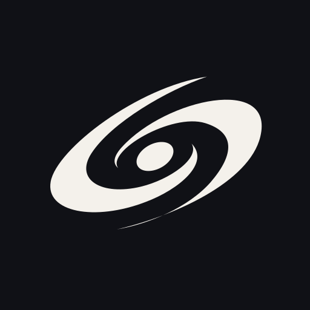
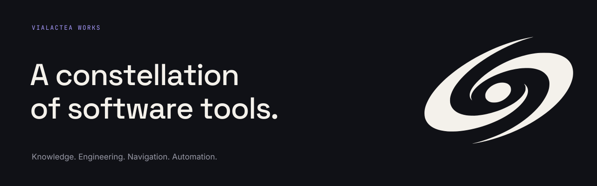

A shared center.
Room to explore.
Two broad spiral arms and a quiet central core make the Milky Way recognizable in a single color. The upward tilt gives the mark direction; the open space keeps it clear.


Use Vialactea Works consistently as the organization name. Use the symbol alone when space is limited. Keep the wordmark and symbol together in the supplied proportions.
Deep space. Warm light.
A nearly black foundation, a warm white foreground, and a small violet signal. Keep approximately 90% of each composition neutral.
#101116Primary background.Text on light.
#F4F1EBPrimary foreground.Light background.
#A89BFFLinks on dark.One point of emphasis.
#9899A6Secondary texton dark backgrounds.
#1C1D25Raised surfaceswithin dark layouts.
Keep the logo monochrome.
Default to Starlight on Deep Space. Reverse it on light backgrounds. Violet may color the whole symbol as a secondary expression; keep both arms the same color.
Let color carry a clear purpose.
Use violet for a link, selected detail, or focal point. Underline text links. Use Deep Space for text on Starlight; violet and Dust are too low in contrast there.
Character. Clarity. Precision.
Three families with distinct jobs. Keep headings expressive, descriptions easy to read, and technical detail compact.
The fonts are included locally under the SIL Open Font License. Keep their license files when redistributing font binaries. Custom typography belongs in supplied graphics and owned interfaces; repository text should remain selectable and accessible.
Give the mark room.
The spiral and its open center do the work. Preserve their proportions and leave enough space for the shape to read at a glance.
- Clear space. Let W equal the visible symbol’s width. Leave at least W / 8 clear on every side.
- Orientation. Preserve the supplied upward tilt, central oval, and arm shapes.
- Avatar fit. The visible mark occupies approximately 68% of the square. Keep it centered on a solid background.
- Minimum size. Use the visible symbol at 32px wide or larger. Use a 48px avatar container or larger.
- Keep it intact. No stretching, extra outlines, gradients, shadows, stars, or added orbital rings. Never recolor the arms separately.

The 24px and 32px containers show behavior under compression; they are not approved minimum sizes. Use the symbol alone in compact spaces. Do not add the organization name inside an avatar.
A family of focused tools.
Projects retain their own names and purposes. A shared typography, palette, and organization signature make the relationship visible.
Build with space.
Use a simple grid, generous margins, and a 4px spacing rhythm. Align text to the left. Let one visual or headline lead each composition.
Keep the field quiet.
Use thin rules, short labels, and large areas of solid color. Repeat the galaxy sparingly. Avoid star fields, decorative code, and luminous effects.
Describe the work.
Use direct sentences and concrete capabilities. Sound curious and capable. Explain what each project does and keep its current status explicit.
A knowledge and content system for connected information.
Vialactea WorksA disciplined workflow for designing and building software.
Vialactea WorksA workspace navigator for understanding and maintaining repositories.
Vialactea WorksDeclarative configuration for AI-agent ecosystems.
Vialactea WorksUse the project name as the headline and “Vialactea Works” as a smaller endorsement. Keep the same structural template across projects. State availability and contribution guidance separately for each repository.
Ready for GitHub.
The avatar establishes recognition. The profile header and social card extend the same identity to larger surfaces.

Organization avatar
Upload github-avatar.png in the organization’s profile settings. The 512 × 512 PNG includes the solid dark background and spacing. Keep the full square in the crop.

Profile header
Use github-header.svg at the top of the organization profile README, with descriptive alternative text. Its 1280 × 400 layout scales as one image.

Repository social preview
Use social-card.png as the organization’s general 1280 × 640 social card. Project-specific versions should retain the layout and use the project’s own name and purpose.

Product interfaces
Start from tokens.css for colors, fonts, and spacing. Keep practical states such as errors and warnings clear in their own right; the violet accent does not replace status labels.
Use the originals.
Vector marks for flexible reproduction. PNG files for direct upload. This guide and its typography work locally, without a network connection.


All logo SVGs remain sharp at any size. Transparent marks inherit the background you place them on. Use your browser’s Print command to save or print this guide; a dedicated print layout is included. The design brief and generation prompts record the built-in imagegen exploration and the final vector production.